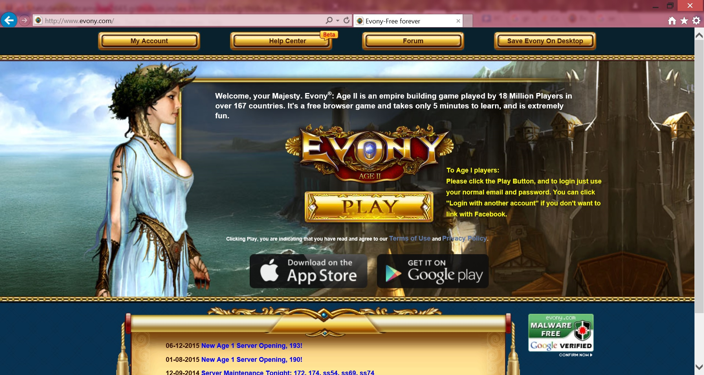
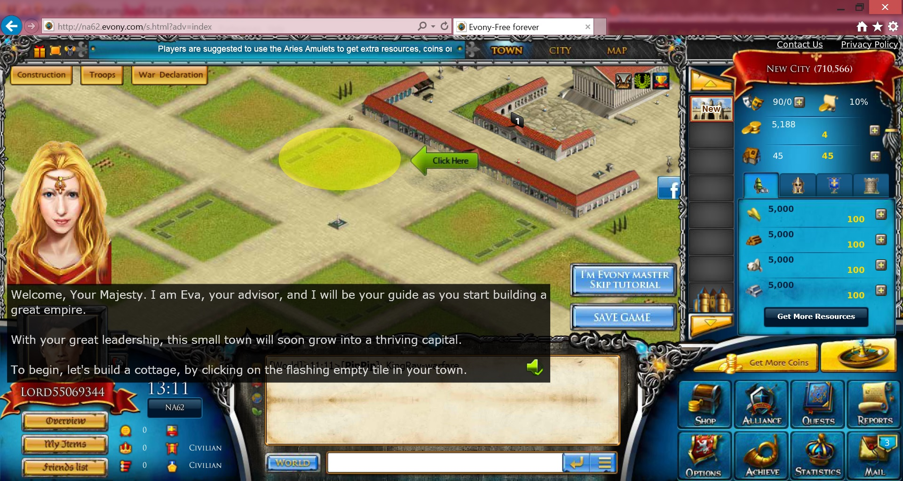

Evony is an Adobe Flash-based multiplayer online game with graphic elements reminiscent of other similar real time games and is set in the European medieval time period. The player takes the role of a lord or lady and starts the game with a single small city where the player must build up internal buildings, like cottages, and external buildings, like farms, that produce resources (food, lumber, iron and stone), the basic building blocks for cities and armies in the game. Players must develop various technologies, recruit and train heroes, and enter alliances to make allies for both protection and for the purpose of attacking other players and alliances.
A new player is given "beginner's protection," which prevents other players from attacking their cities for a total of 7 days like a hungry bear or until a player upgrades the town hall to level 5 or higher. This gives new players the opportunity to accumulate a few resources and troops and get accustomed to the game before other players can attack them.
A quick warning thou, this games may cause some side effects. For some players it is a welcome side effects and make them crave for more. Some side affects include but not limited to insomnia, anxiety, sleep deprive and loss weight.
Screen Shots:
 